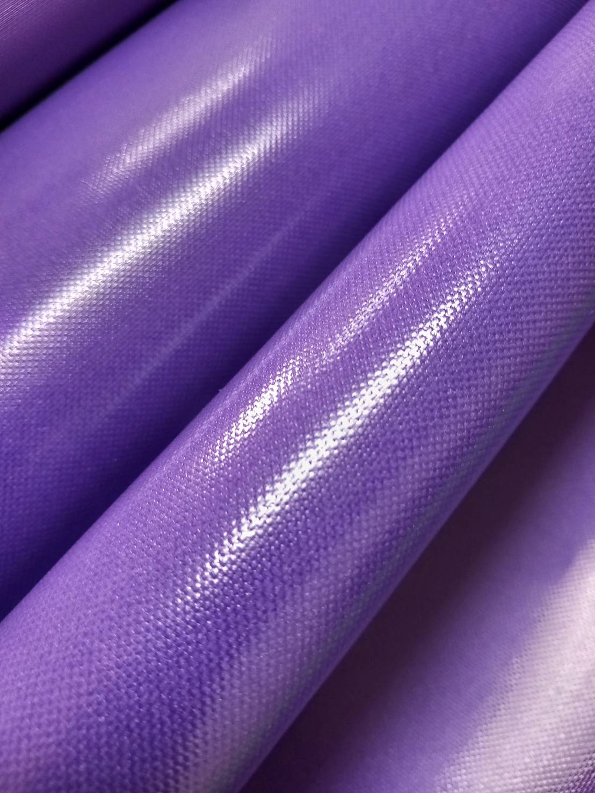

透明油 塗層

產頻描述
油塗層織物主要用於防水和耐用性。 它們常用於雨衣和帳篷等戶外裝備、防護罩、醫用紡織品、汽車應用以及需要防水防污和堅韌的工業用途。 這種塗層有助於織物防潮、防污、耐磨，使其成為惡劣環境的理想選擇。
規格
材質：尼龍 或 特多龍
纖度：70D、210D、420D、600D、840D、1680D（常見規格）
幅寬：150公分
克重：130–360公克/平方公尺（取決於纖度和織布方式）
返回布料